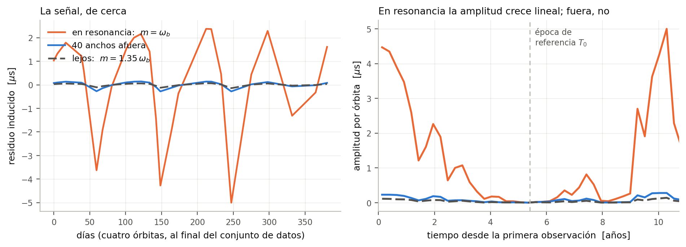
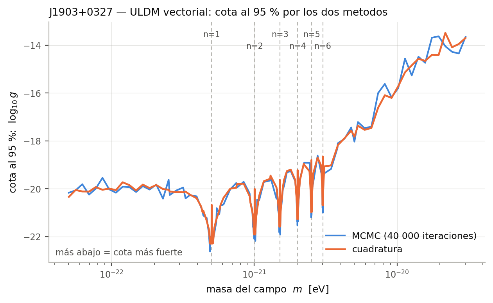
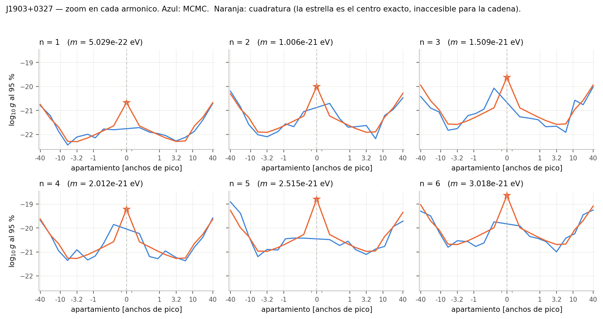
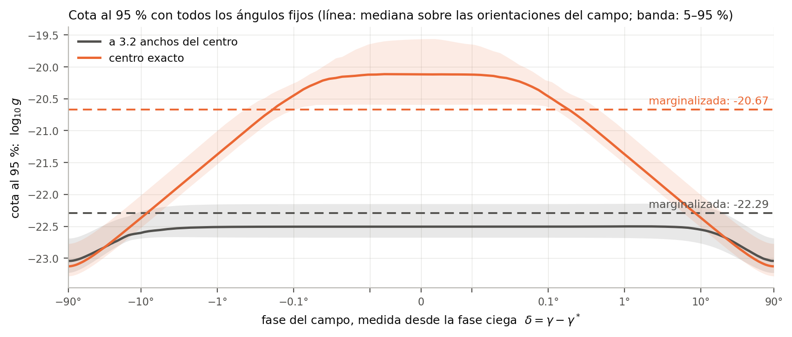
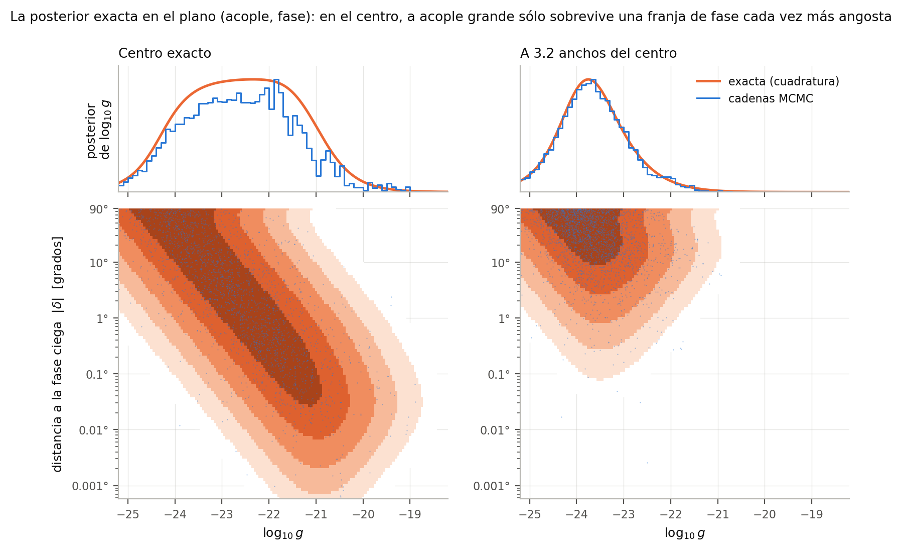
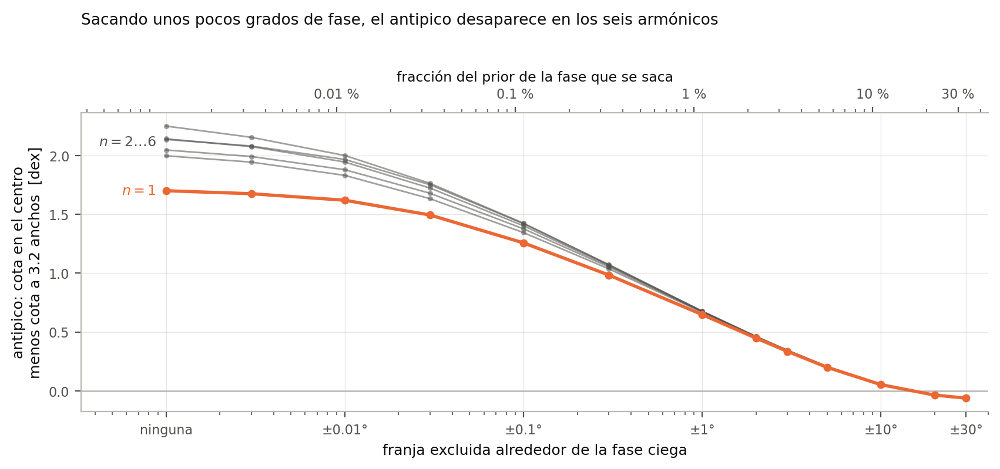
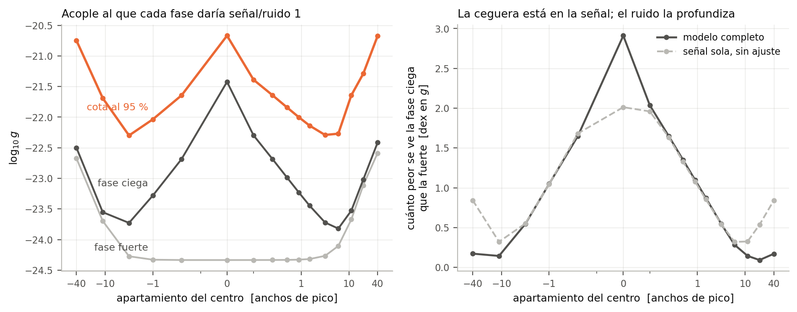

<title>Resonancias de J1903+0327</title>
<link rel="preconnect" href="https://fonts.googleapis.com">
<link rel="preconnect" href="https://fonts.gstatic.com" crossorigin>
<link rel="stylesheet" href="https://fonts.googleapis.com/css2?family=Spectral:ital,wght@0,400;0,500;0,600;1,400&family=Source+Sans+3:ital,wght@0,400;0,600;1,400&family=IBM+Plex+Mono:wght@400;500&display=swap">

<style>
:root{
  --ground:#f6f7f9; --surface:#ffffff; --surface-2:#eef1f5;
  --ink:#15181d; --ink-2:#565f6d; --ink-3:#8b95a3;
  --rule:#dde2e9; --rule-strong:#c3cbd6;
  --mcmc:#2a78d6; --cuad:#eb6834;
  --serif:"Spectral",Georgia,"Times New Roman",serif;
  --sans:"Source Sans 3",-apple-system,"Segoe UI",Helvetica,Arial,sans-serif;
  --mono:"IBM Plex Mono",ui-monospace,"SFMono-Regular",Consolas,monospace;
  --measure:66ch;
}
@media (prefers-color-scheme:dark){
  :root:not([data-theme="light"]){
    --ground:#0f1216; --surface:#161a20; --surface-2:#1c222a;
    --ink:#e6eaf0; --ink-2:#98a2b0; --ink-3:#6d7683;
    --rule:#262d36; --rule-strong:#39424e;
    --mcmc:#4a90e8; --cuad:#f07a4b;
  }
}
:root[data-theme="dark"]{
  --ground:#0f1216; --surface:#161a20; --surface-2:#1c222a;
  --ink:#e6eaf0; --ink-2:#98a2b0; --ink-3:#6d7683;
  --rule:#262d36; --rule-strong:#39424e;
  --mcmc:#4a90e8; --cuad:#f07a4b;
}

*{box-sizing:border-box}
body{
  margin:0; background:var(--ground); color:var(--ink);
  font-family:var(--sans); font-size:16.5px; line-height:1.62;
  -webkit-font-smoothing:antialiased;
}
.wrap{max-width:1040px; margin:0 auto; padding-inline:20px; padding-block:0}

header.top{border-bottom:1px solid var(--rule); background:var(--surface)}
header.top .wrap{padding-block:44px 32px}
.eyebrow{
  font-family:var(--mono); font-size:11.5px; letter-spacing:.14em;
  text-transform:uppercase; color:var(--ink-3); margin:0 0 14px;
}
h1{
  font-family:var(--serif); font-weight:600; font-size:clamp(1.9rem,4.4vw,2.7rem);
  line-height:1.16; margin:0 0 14px; text-wrap:balance; letter-spacing:-.01em;
}
.standfirst{
  font-family:var(--serif); font-size:1.12rem; line-height:1.55;
  color:var(--ink-2); margin:0; max-width:62ch;
}
.byline{
  margin-top:22px; font-size:14px; color:var(--ink-3);
  display:flex; flex-wrap:wrap; gap:6px 18px;
}
.peine{display:flex; align-items:flex-end; gap:5px; height:34px; margin:26px 0 0}
.peine i{display:block; width:3px; background:var(--cuad); border-radius:1px}
.peine span{
  font-family:var(--mono); font-size:11px; color:var(--ink-3);
  margin-left:10px; align-self:center;
}

main .wrap{padding-block:12px 60px}
.parte{
  font-family:var(--mono); font-size:11.5px; letter-spacing:.14em;
  text-transform:uppercase; color:var(--cuad); margin:44px 0 -10px;
  padding-top:26px; border-top:2px solid var(--cuad);
}
.parte:first-child{margin-top:20px}
section{padding-block:22px}
section + section{border-top:1px solid var(--rule)}
h2{
  font-family:var(--serif); font-weight:600; font-size:1.42rem;
  margin:0 0 4px; letter-spacing:-.005em; text-wrap:balance;
}
h3{
  font-family:var(--sans); font-weight:600; font-size:1rem;
  margin:24px 0 2px; color:var(--ink);
}
p{margin:.72em 0; max-width:var(--measure)}
ul,ol{max-width:var(--measure); padding-left:1.15em; margin:.6em 0}
li{margin:.34em 0}
strong{font-weight:600}
code,.mono{font-family:var(--mono); font-size:.88em}
code{background:var(--surface-2); padding:.1em .34em; border-radius:3px}

.eq{
  font-family:var(--mono); font-size:14px; line-height:1.75;
  background:var(--surface); border:1px solid var(--rule);
  border-left:3px solid var(--rule-strong); border-radius:2px;
  padding:14px 16px; margin:18px 0; max-width:var(--measure);
  overflow-x:auto; white-space:pre;
}
.eq b{color:var(--cuad); font-weight:500}
.eq .cap{
  display:block; font-family:var(--sans); font-size:13.5px; color:var(--ink-2);
  white-space:normal; margin-top:10px; line-height:1.5;
}

.num{
  font-family:var(--mono); font-size:.92em; font-weight:500;
  white-space:nowrap; color:var(--ink);
}
.num.mcmc{color:var(--mcmc)} .num.cuad{color:var(--cuad)}

.result{
  background:var(--surface); border:1px solid var(--rule);
  border-left:3px solid var(--cuad); border-radius:2px;
  padding:20px 22px; margin:22px 0; max-width:var(--measure);
}
.result .k{
  font-family:var(--mono); font-size:11.5px; letter-spacing:.1em;
  text-transform:uppercase; color:var(--ink-3); margin:0 0 8px;
}
.result .v{
  font-family:var(--serif); font-size:1.55rem; line-height:1.25; margin:0;
  font-variant-numeric:tabular-nums;
}
.result p.note{font-size:14.5px; color:var(--ink-2); margin:10px 0 0}

.tablabox{overflow-x:auto; margin:20px 0; max-width:100%}
table{border-collapse:collapse; font-size:14.5px; min-width:min(100%,460px)}
th,td{text-align:left; padding:7px 16px 7px 0;
  border-bottom:1px solid var(--rule); vertical-align:top}
th{
  font-family:var(--mono); font-size:11.5px; letter-spacing:.07em;
  text-transform:uppercase; color:var(--ink-3); font-weight:500;
  border-bottom:1px solid var(--rule-strong);
}
td.n,th.n{text-align:right; font-family:var(--mono);
  font-variant-numeric:tabular-nums; padding-right:22px}
tbody tr:last-child td{border-bottom:none}

figure{margin:26px 0; max-width:100%}
figure img{
  width:100%; height:auto; display:block; border:1px solid var(--rule);
  border-radius:2px; background:#fff;
}
figcaption{font-size:14px; color:var(--ink-2); margin-top:9px;
  max-width:var(--measure)}
figcaption b{color:var(--ink); font-weight:600}
.leyenda{display:flex; flex-wrap:wrap; gap:8px 20px; margin:12px 0 0;
  font-size:14px; color:var(--ink-2)}
.leyenda i{display:inline-block; width:22px; height:3px; border-radius:2px;
  margin-right:7px; vertical-align:middle}

ol.escalera{list-style:none; padding:0; counter-reset:paso;
  max-width:var(--measure)}
ol.escalera li{
  counter-increment:paso; position:relative; padding-left:38px;
  margin:0; padding-block:12px; border-bottom:1px solid var(--rule);
}
ol.escalera li:last-child{border-bottom:none}
ol.escalera li::before{
  content:counter(paso); position:absolute; left:0; top:12px;
  font-family:var(--mono); font-size:12px; color:var(--cuad);
  border:1px solid var(--rule-strong); border-radius:50%;
  width:22px; height:22px; display:grid; place-items:center;
}
ol.escalera .q{font-family:var(--mono); font-size:13px; color:var(--ink-2);
  display:block; margin-top:2px}

.caveat{color:var(--ink-2)}
footer{border-top:1px solid var(--rule); background:var(--surface)}
footer .wrap{padding-block:26px 40px; font-size:14px; color:var(--ink-2)}
@media (max-width:640px){
  body{font-size:16px}
  header.top .wrap{padding-block:32px 24px}
  .eq{font-size:12.5px}
}
</style>

<header class="top">
  <div class="wrap">
    <p class="eyebrow">Materia oscura ultraliviana &middot; NANOGrav 15 yr</p>
    <h1>Resonancias de J1903+0327</h1>
    <p class="standfirst">Al pararnos justo en el centro de una resonancia, la
    cota se <i>debilitaba</i> y la cadena de Markov se trababa. ¿Ese antipico es
    física o es un problema numérico? Para contestarlo calculamos la misma
    posterior por un camino que no muestrea nada.</p>
    <div class="peine" aria-hidden="true">
      <i style="height:34px"></i><i style="height:27px"></i><i style="height:22px"></i><i style="height:18px"></i><i style="height:15px"></i><i style="height:12px"></i>
      <span>seis armónicos, <span class="mono">m = n&nbsp;&omega;<sub>b</sub></span></span>
    </div>
    <div class="byline">
      <span>Federico Huxhagen &middot; IFIBA, CONICET&ndash;UBA</span>
      <span>Proyecto final del curso de ondas gravitacionales</span>
    </div>
  </div>
</header>

<main>
<div class="wrap">

<p class="parte">Parte I &mdash; de qué se trata</p>

<section>
  <h2>El acoplamiento</h2>
  <p>Si la materia oscura es un campo <b>ultraliviano</b> —masas de
  <span class="mono">10<sup>&minus;22</sup></span> eV, unas 30 órdenes por
  debajo de un electrón— su longitud de onda de de Broglie es del tamaño de una
  galaxia y el campo se comporta como una <b>onda clásica</b> que oscila con
  frecuencia igual a su masa, <span class="mono">&phi; &prop; cos(m t)</span>.
  No es un gas de partículas: es un campo coherente que baña al sistema solar y
  a cualquier púlsar de la galaxia.</p>

  <p>Acá consideramos un campo <b>vectorial</b> (espín 1) acoplado al número
  bariónico menos leptónico, <span class="mono">B&minus;L</span>. Ese acoplamiento
  le da a cada cuerpo una carga proporcional a su número de neutrones, y por lo
  tanto una <b>fuerza extra</b> que oscila en el tiempo:</p>

  <div class="eq">f&#8407;(t) = &minus; <b>𝓕</b> sin(m t&#771; + &Upsilon;<sub>0</sub>) n&#770;

<b>𝓕</b> = g · (&delta;<sub>c</sub> / m<sub>N</sub>) · &radic;(2 &rho;<sub>DM</sub>) · &rho;
<span class="cap">La fuerza apunta en la dirección <span class="mono">n&#770;</span>
del campo y oscila con frecuencia <span class="mono">m</span>. Su amplitud lleva
el acoplamiento <span class="mono">g</span> —lo que queremos acotar—, la
asimetría de carga entre las dos estrellas
(<span class="mono">&delta;<sub>c</sub></span>), la densidad local de materia
oscura, y la amplitud local del campo <span class="mono">&rho;</span>, que es
estocástica.</span></div>

  <p>Como <span class="mono">g</span> aparece lineal en la fuerza, todo el
  problema es: <b>¿cuán grande puede ser <span class="mono">g</span> sin que ya
  hubiéramos visto el efecto?</b></p>
</section>

<section>
  <h2>El efecto sobre un púlsar binario</h2>
  <p>Un púlsar de milisegundo es un reloj: emite un pulso por rotación con una
  estabilidad comparable a la de un reloj atómico. Si está en un sistema binario,
  el tiempo de llegada de cada pulso depende de dónde está en su órbita. Medimos
  los tiempos de llegada (TOAs) durante años, les restamos el modelo orbital que
  mejor ajusta, y lo que queda son los <b>residuos</b>: microsegundos.</p>

  <p>La fuerza extra perturba la órbita. La forma estándar de escribirlo son las
  <b>ecuaciones osculantes</b> (de Gauss), que dan cómo evoluciona cada elemento
  orbital bajo una perturbación. Por ejemplo, la excentricidad:</p>

  <div class="eq">ė = ( &radic;(1&minus;e²) / (a &omega;<sub>b</sub>) ) [ f<sub>r</sub> sin&theta; + f<sub>&theta;</sub> (cos&theta; + cos E) ]
<span class="cap">Con <span class="mono">f<sub>r</sub></span> y
<span class="mono">f<sub>&theta;</sub></span> las componentes radial y tangencial
de la fuerza, <span class="mono">&theta;</span> la anomalía verdadera y
<span class="mono">E</span> la excéntrica. Hay una ecuación así para cada uno de
los cinco elementos que el <i>timing</i> mide.</span></div>

  <p>Cada elemento perturbado mueve los residuos a través de la derivada que el
  ajuste de <i>timing</i> ya conoce:</p>

  <div class="eq">r(t) = &sum;<sub>k</sub> ( &part;r / &part;p<sub>k</sub> ) &delta;p<sub>k</sub>(t)
<span class="cap">con <span class="mono">p<sub>k</sub></span> = los parámetros
orbitales <span class="mono">P<sub>b</sub>, x, e, &omega;, T<sub>0</sub></span>.
Eso define el <b><i>template</i></b>: la forma que tendría el residuo si el campo
existiera. Es lineal en <span class="mono">g</span>.</span></div>
</section>

<section>
  <h2>La inferencia</h2>
  <p>Con el <i>template</i> en mano, el resto es estadística estándar. Los
  residuos son gaussianos con una matriz de covarianza
  <span class="mono">C</span> que incluye el ruido blanco medido, el ruido rojo
  del púlsar y la marginalización sobre el modelo de <i>timing</i>:</p>

  <div class="eq">ln L(d | &theta;) = &minus;½ (r &minus; h(&theta;))ᵀ C⁻¹ (r &minus; h(&theta;)) &minus; ½ ln det(2&pi;C)

p(&theta; | d) &prop; L(d | &theta;) &pi;(&theta;)        <span style="color:var(--ink-3)">← Bayes</span>
<span class="cap">El vector <span class="mono">&theta;</span> tiene 7 componentes:
el acoplamiento <span class="mono">g</span>, la amplitud
<span class="mono">&rho;</span> y la fase <span class="mono">&gamma;</span> del
campo, dos ángulos para su dirección, y dos parámetros de ruido rojo. Los
<i>priors</i> <span class="mono">&pi;</span> son los físicos: Rayleigh en
<span class="mono">&rho;</span>, uniforme en la fase, isótropo en la
dirección.</span></div>

  <p>De los siete parámetros sólo nos interesa uno. Marginalizamos los otros
  seis, lo que deja la <b>evidencia marginal</b>
  <span class="mono">Z(g)</span>, y de ahí sale la posterior de
  <span class="mono">g</span> y su percentil 95: la cota.</p>

  <div class="eq">Z(g) = &int; L(d | g, &psi;) &pi;(&psi;) d&psi;        <span style="color:var(--ink-3)">&psi; = los otros seis</span>

p(log g | d) &prop; 10<sup>log g</sup> · Z(g)   →   <b>cota al 95 %</b></div>

  <p>Hacer esa integral de seis dimensiones es lo caro. El método de siempre es
  una <b>cadena de Markov</b> (MCMC): se pasea por el espacio de los siete
  parámetros y el histograma de dónde estuvo aproxima la posterior. Es lo que
  veníamos usando, una cadena por cada masa del barrido.</p>
</section>

<section>
  <h2>Las resonancias</h2>
  <p>Acá está lo interesante. La fuerza oscila con frecuencia
  <span class="mono">m</span>; la órbita, con
  <span class="mono">&omega;<sub>b</sub></span>. Cuando
  <span class="mono">m</span> se acerca a un múltiplo de
  <span class="mono">&omega;<sub>b</sub></span>, el efecto deja de promediarse a
  cero órbita a órbita y <b>se acumula</b>: los elementos orbitales derivan
  linealmente en el tiempo. Sobre <span class="mono">T<sub>obs</sub></span> = 10.7
  años eso amplifica la señal en un factor
  <span class="mono">&omega;<sub>b</sub>T<sub>obs</sub> &asymp; 260</span>.</p>

  <div class="eq">&delta;a|<sub>sec</sub> = (2 <b>𝓕</b> sin&vartheta; · t&#771; / &omega;<sub>b</sub>) [ J'<sub>N</sub>(Ne) cos&phi; cos&Upsilon;<sub>0</sub> &minus; (&radic;(1&minus;e²)/e) J<sub>N</sub>(Ne) sin&phi; sin&Upsilon;<sub>0</sub> ]
<span class="cap">La respuesta secular en el semieje, justo en
<span class="mono">m = N&omega;<sub>b</sub></span>. El factor
<span class="mono">t&#771;</span> es el crecimiento lineal. Los
<span class="mono">J<sub>N</sub></span> son funciones de Bessel: <b>en una órbita
excéntrica resuenan TODOS los armónicos</b>, no sólo el fundamental. Hay una
expresión así para cada elemento orbital.</span></div>

  <p>J1903+0327 es el binario más excéntrico del <i>wideband</i> de NANOGrav
  15 yr, con <span class="mono">e = 0.4367</span>. Por eso lo elegimos: tiene
  seis resonancias utilizables en vez de una.</p>

  <figure>
    
    <figcaption><b>La señal.</b> A la izquierda, cómo se ve el residuo inducido
    en cuatro órbitas. A la derecha, su amplitud órbita por órbita: en resonancia
    crece lineal desde la época de referencia; fuera, se queda chata. Es el
    mismo acoplamiento en los tres casos &mdash; sólo cambia la masa del campo.</figcaption>
  </figure>

  <p>El pico es angosto. Su ancho relativo es
  <span class="mono">1/(n &omega;<sub>b</sub> T<sub>obs</sub>)</span>, o sea
  <span class="num" data-num="anchos_resonancia" data-idx="0" data-fmt="4f" data-val="0.0038638726178945016">0.0039</span>
  para el fundamental: cuatro partes en mil. Por eso el barrido en masa se mide
  en <b>anchos de pico</b>, no en eV.</p>
</section>

<p class="parte">Parte II &mdash; el problema</p>

<section>
  <h2>Un antipico donde debería haber un pico</h2>
  <p>Al hacer el barrido en masa aparecía algo raro. Acercándose a la resonancia
  la cota mejora, como corresponde: hay más señal. Pero <b>justo en el centro
  exacto</b> <span class="mono">m = n&omega;<sub>b</sub></span> la cota
  <i>empeora</i>, y bastante. Un antipico, apuntando para el lado equivocado.</p>

  <p>Y en ese mismo punto la cadena de Markov se porta mal. La forma de medirlo
  es el <b>ESS</b>, <i>effective sample size</i>: una cadena de 40 000 pasos no
  da 40 000 muestras independientes, porque cada paso está correlacionado con el
  anterior. El ESS es el número de muestras <i>efectivamente</i> independientes.
  Con ESS de unas pocas decenas, un percentil 95 es puro ruido.</p>

  <div class="result">
    <p class="k">La pregunta del proyecto</p>
    <p class="v">¿El antipico es físico, o es que la cadena no llega?</p>
    <p class="note">Con una sola herramienta no se puede contestar: si el método
    falla justo donde queremos mirar, no hay con qué contrastar. Hacía falta
    calcular la misma posterior por un camino que no muestree.</p>
  </div>
</section>

<p class="parte">Parte III &mdash; el desarrollo</p>

<section>
  <h2>Primero: ¿el <i>template</i> está bien?</h2>
  <p>Antes de dudar del muestreo hay que descartar que el problema sea la señal.
  Las expresiones resonantes de arriba son formas cerradas, obtenidas
  desarrollando en series de Fourier–Bessel. Se validan contra lo único que no
  puede estar de acuerdo por casualidad: <b>las ecuaciones osculantes
  exactas</b>, evaluadas sin ninguna expansión sobre la órbita kepleriana.</p>
  <ol class="escalera">
    <li>Las tasas en serie de Bessel reproducen el lado derecho de Gauss crudo.
      <span class="q">~10⁻¹⁵</span></li>
    <li>Integradas durante 15 años, las formas cerradas coinciden con la
      integración numérica de las osculantes, en los ocho canales orbitales, en
      resonancia y fuera.
      <span class="q">al piso de la cuadratura: &le;6&times;10⁻⁷ (10⁻⁹–10⁻⁸ en las resonancias de J1903)</span></li>
    <li>El <i>template</i> que usa el <i>pipeline</i> reproduce esas formas
      cerradas.
      <span class="q">1.6&times;10⁻¹²</span></li>
  </ol>
  <p>El <i>template</i> no es el problema.</p>
</section>

<section>
  <h2>El método sin muestreo: tres reducciones exactas</h2>
  <p>La idea es hacer la integral de seis dimensiones de frente en vez de
  muestrearla. Suena imposible, pero el problema tiene tres propiedades que lo
  permiten. Ninguna de las tres es una aproximación.</p>

  <h3>1. Toda la información de una masa cabe en 27 números</h3>
  <p>La log-verosimilitud es <b>exactamente cuadrática</b> en la señal, y la
  señal es <b>bilineal en los ángulos</b>: se descompone en seis
  <i>templates</i> fijos que no dependen de ellos. Entonces, a ruido fijo:</p>
  <div class="eq">h = g &rho; &sum;<sub>k</sub> c<sub>k</sub>(&vartheta;,&gamma;,&phi;) U<sub>k</sub>

ln L = ln L<sub>0</sub> + (g&rho;) c·<b>d</b> &minus; ½ (g&rho;)² cᵀ<b>G</b>c
<span class="cap">con <span class="mono"><b>d</b><sub>k</sub> = U<sub>k</sub>ᵀC⁻¹r</span>
(6 números) y <span class="mono"><b>G</b><sub>kl</sub> = U<sub>k</sub>ᵀC⁻¹U<sub>l</sub></span>
(21). Calculados una vez, dan la verosimilitud en <i>cualquier</i> punto del
espacio de parámetros, sin volver a tocar los datos.</span></div>

  <h3>2. La amplitud y su fase son un gaussiano, y salen en forma cerrada</h3>
  <p>El <i>prior</i> de la amplitud es una Rayleigh y el de la fase es uniforme.
  Eso quiere decir que el par
  <span class="mono">(&rho;cos&gamma;, &rho;sin&gamma;)</span> <b>es un gaussiano
  bidimensional</b>. Y la señal es lineal en ese par. Una integral gaussiana con
  un exponente lineal más cuadrático tiene forma cerrada: esas dos dimensiones se
  van exactamente.</p>
  <p>No es una comodidad, es lo que hace que el cálculo funcione: intentando
  hacer esa integral por cuadratura numérica, la cota <b>no converge</b> &mdash;
  en resonancia el integrando es un pico agudísimo justo en esa dirección.</p>

  <h3>3. Queda una sola integral, sobre la esfera</h3>
  <p>Lo que sobrevive es un promedio sobre la dirección del campo, y eso se hace
  con una regla producto que es exacta para polinomios esféricos. Converge
  geométricamente, y coincide con un Monte Carlo uniforme independiente.</p>

  <p>El resultado: <b>la misma posterior, sin ningún sorteo</b>. Y sin la
  limitación de la cadena, se puede evaluar también el centro exacto del pico.</p>
</section>

<section>
  <h2>Cómo se verificó</h2>
  <p>Esto es una secuencia: si el primer eslabón falla, los demás no significan
  nada.</p>
  <ol class="escalera">
    <li><b>El <i>template</i></b> contra las ecuaciones osculantes exactas,
      en los tres pasos de arriba.
      <span class="q">al piso de la cuadratura numérica; 1.6&times;10⁻¹² el del pipeline</span></li>
    <li><b>La bilinealidad</b>, que es la hipótesis de la que cuelga todo: 60
      direcciones al azar por masa.
      <span class="q">peor error relativo 2.4&times;10⁻¹⁴</span></li>
    <li><b>El núcleo</b> <span class="mono">(d, G)</span> contra la
      verosimilitud del pipeline, en 25 puntos al azar por masa.
      <span class="q">peor |&Delta;ln L| = 1.4&times;10⁻¹⁰ &mdash; el eslabón crítico</span></li>
    <li><b>La integral gaussiana</b>, dirección por dirección, contra cuadratura
      numérica bruta con 120 000 nodos en la fase.
      <span class="q">7&times;10⁻¹⁵</span></li>
    <li><b>La malla esférica</b>, por refinamiento con extrapolación del límite,
      y contra tres Monte Carlo de 10⁶ direcciones.
      <span class="q">producción a &lt;0.01 dex del límite</span></li>
  </ol>
</section>

<p class="parte">Parte IV &mdash; resultados</p>

<section>
  <h2>Las dos curvas</h2>
  <figure>
    
    <figcaption><b>La cota al 95&nbsp;% contra la masa del campo.</b> Las líneas
    punteadas marcan <span class="mono">m = n&omega;<sub>b</sub></span>. Los seis
    dips son las resonancias; la envolvente cae con
    <span class="mono">n</span> como predice el desarrollo de Bessel.</figcaption>
    <div class="leyenda">
      <span><i style="background:var(--mcmc)"></i>MCMC</span>
      <span><i style="background:var(--cuad)"></i>cuadratura</span>
    </div>
  </figure>

  <p>Sobre las <span class="num" data-num="n_masas_comunes" data-fmt="int" data-val="180">180</span>
  masas en común, los dos métodos coinciden con una mediana de
  <span class="num mcmc" data-num="dif_mediana_dex" data-fmt="+3f" data-val="-0.06228716686897151">&minus;0.062</span>&nbsp;dex
  y un RMS de
  <span class="num mcmc" data-num="dif_rms_dex" data-fmt="3f" data-val="0.2500893118932985">0.250</span>&nbsp;dex.
  Y el desacuerdo se achica al alargar la cadena, que es la firma de que lo que
  queda es ruido de muestreo:</p>

  <div class="tablabox">
  <table>
    <thead><tr><th>iteraciones por cadena</th><th class="n">ESS mediano</th>
      <th class="n">RMS contra la cuadratura</th></tr></thead>
    <tbody>
      <tr><td>10&#8239;000</td>
        <td class="n"><span class="num" data-num="mcmc_it10000_ess_mediana" data-fmt="1f" data-val="42.57657956731887">42.6</span></td>
        <td class="n"><span class="num mcmc" data-num="mcmc_it10000_rms_vs_cuadratura_dex" data-fmt="3f" data-val="0.3620643029705747">0.362</span> dex</td></tr>
      <tr><td>40&#8239;000</td>
        <td class="n"><span class="num" data-num="mcmc_it40000_ess_mediana" data-fmt="1f" data-val="141.5729143968427">141.6</span></td>
        <td class="n"><span class="num mcmc" data-num="mcmc_it40000_rms_vs_cuadratura_dex" data-fmt="3f" data-val="0.2500893118932985">0.250</span> dex</td></tr>
    </tbody>
  </table>
  </div>

  <div class="result">
    <p class="k">La mejor cota del barrido</p>
    <p class="v">log<sub>10</sub> <i>g</i> &lt;
      <span class="num cuad" data-num="cota_mas_fuerte_cuadratura_dex" data-fmt="3f" data-val="-22.299792072119246">&minus;22.300</span></p>
    <p class="note">al 95&nbsp;% de credibilidad, en
      <span class="num" data-num="cota_mas_fuerte_cuadratura_masa_eV" data-fmt="e" data-val="4.96791652639362e-22">4.9679&times;10<sup>&minus;22</sup></span> eV.
      El barrido cubre
      <span class="num" data-num="n_masas_cuadratura" data-fmt="int" data-val="186">186</span>
      masas entre
      <span class="num" data-num="rango_masas_eV" data-idx="0" data-fmt="e" data-val="5.029363098047915e-23">5.0294&times;10<sup>&minus;23</sup></span> eV y
      <span class="num" data-num="rango_masas_eV" data-idx="1" data-fmt="e" data-val="3.017617858828751e-20">3.0176&times;10<sup>&minus;20</sup></span> eV.</p>
  </div>
</section>

<section>
  <h2>El centro del pico</h2>
  <figure>
    
    <figcaption><b>Zoom en cada armónico.</b> El apartamiento va en anchos de
    pico. La estrella naranja es el centro exacto, que sólo la cuadratura
    evalúa. El perfil es simétrico, con la mejor cota a
    &plusmn;<span class="num cuad" data-num="offset_optimo_tipico" data-fmt="2f" data-val="3.162">3.16</span>
    anchos y un hundimiento claro justo en el centro.</figcaption>
  </figure>

  <div class="tablabox">
  <table>
    <thead><tr>
      <th>armónico</th><th class="n">m [eV]</th>
      <th class="n">mejor del pico</th><th class="n">centro exacto</th>
      <th class="n">penalidad [dex]</th>
    </tr></thead>
    <tbody>
      <tr><td>n = 1</td>
        <td class="n"><span class="num" data-num="centro_n1_masa_eV" data-fmt="e" data-val="5.029363098047929e-22">5.0294&times;10<sup>&minus;22</sup></span></td>
        <td class="n"><span class="num" data-num="centro_n1_mejor_del_pico_dex" data-fmt="3f" data-val="-22.299792072119246">&minus;22.300</span></td>
        <td class="n"><span class="num" data-num="centro_n1_ul95_dex" data-fmt="3f" data-val="-20.669815251018157">&minus;20.670</span></td>
        <td class="n"><span class="num cuad" data-num="centro_n1_penalidad_dex" data-fmt="2f" data-val="1.6299768211010885">1.63</span></td></tr>
      <tr><td>n = 2</td>
        <td class="n"><span class="num" data-num="centro_n2_masa_eV" data-fmt="e" data-val="1.0058726196095858e-21">1.0059&times;10<sup>&minus;21</sup></span></td>
        <td class="n"><span class="num" data-num="centro_n2_mejor_del_pico_dex" data-fmt="3f" data-val="-21.91306476785603">&minus;21.913</span></td>
        <td class="n"><span class="num" data-num="centro_n2_ul95_dex" data-fmt="3f" data-val="-20.000609606227943">&minus;20.001</span></td>
        <td class="n"><span class="num cuad" data-num="centro_n2_penalidad_dex" data-fmt="2f" data-val="1.9124551616280883">1.91</span></td></tr>
      <tr><td>n = 3</td>
        <td class="n"><span class="num" data-num="centro_n3_masa_eV" data-fmt="e" data-val="1.5088089294143787e-21">1.5088&times;10<sup>&minus;21</sup></span></td>
        <td class="n"><span class="num" data-num="centro_n3_mejor_del_pico_dex" data-fmt="3f" data-val="-21.58165606621849">&minus;21.582</span></td>
        <td class="n"><span class="num" data-num="centro_n3_ul95_dex" data-fmt="3f" data-val="-19.61999334319841">&minus;19.620</span></td>
        <td class="n"><span class="num cuad" data-num="centro_n3_penalidad_dex" data-fmt="2f" data-val="1.9616627230200798">1.96</span></td></tr>
      <tr><td>n = 4</td>
        <td class="n"><span class="num" data-num="centro_n4_masa_eV" data-fmt="e" data-val="2.0117452392191715e-21">2.0117&times;10<sup>&minus;21</sup></span></td>
        <td class="n"><span class="num" data-num="centro_n4_mejor_del_pico_dex" data-fmt="3f" data-val="-21.273942280440117">&minus;21.274</span></td>
        <td class="n"><span class="num" data-num="centro_n4_ul95_dex" data-fmt="3f" data-val="-19.217756231030265">&minus;19.218</span></td>
        <td class="n"><span class="num cuad" data-num="centro_n4_penalidad_dex" data-fmt="2f" data-val="2.0561860494098525">2.06</span></td></tr>
      <tr><td>n = 5</td>
        <td class="n"><span class="num" data-num="centro_n5_masa_eV" data-fmt="e" data-val="2.514681549023964e-21">2.5147&times;10<sup>&minus;21</sup></span></td>
        <td class="n"><span class="num" data-num="centro_n5_mejor_del_pico_dex" data-fmt="3f" data-val="-20.979078548916586">&minus;20.979</span></td>
        <td class="n"><span class="num" data-num="centro_n5_ul95_dex" data-fmt="3f" data-val="-18.796029485791927">&minus;18.796</span></td>
        <td class="n"><span class="num cuad" data-num="centro_n5_penalidad_dex" data-fmt="2f" data-val="2.1830490631246597">2.18</span></td></tr>
      <tr><td>n = 6</td>
        <td class="n"><span class="num" data-num="centro_n6_masa_eV" data-fmt="e" data-val="3.0176178588287575e-21">3.0176&times;10<sup>&minus;21</sup></span></td>
        <td class="n"><span class="num" data-num="centro_n6_mejor_del_pico_dex" data-fmt="3f" data-val="-20.692854665208518">&minus;20.693</span></td>
        <td class="n"><span class="num" data-num="centro_n6_ul95_dex" data-fmt="3f" data-val="-18.64904854972741">&minus;18.649</span></td>
        <td class="n"><span class="num cuad" data-num="centro_n6_penalidad_dex" data-fmt="2f" data-val="2.0438061154811074">2.04</span></td></tr>
    </tbody>
  </table>
  </div>

</section>

<section>
  <h2>Por qué: una fase que el púlsar no ve</h2>
  <p>El campo tiene una orientación (dos ángulos) y una fase. Con la cuadratura
  se puede hacer algo que con la cadena no: <b>fijar todos los ángulos</b> y
  calcular la cota para esa configuración exacta, marginalizando sólo la
  amplitud &mdash; que también sale en forma cerrada. Y el resultado es
  claro: el problema no está en hacia dónde apunta el campo, sino en su
  <b>fase</b>.</p>

  <p>Para cada orientación, la señal depende de la fase a través de dos
  combinaciones: una que el púlsar registra bien y otra &mdash; la <b>fase
  ciega</b> &mdash; que registra mal. Es como empujar una hamaca: en fase,
  cada empujón suma; a 90°, lo que empujás en media órbita lo devolvés en la
  otra. Lejos del centro las dos fases se ven parecido; justo en resonancia la
  ciega se vuelve casi invisible.</p>

  <figure>
    
    <figcaption><b>La cota con los ángulos fijos, contra la fase.</b> En el
    centro exacto (naranja) la cota típica es
    <span class="num cuad" data-num="fase_centro_tipica_dex" data-fmt="2f" data-val="-23.063120416885816">&minus;23.06</span>,
    pero a menos de unas décimas de grado de la fase ciega sube hasta
    <span class="num cuad" data-num="fase_centro_en_ciega_dex" data-fmt="2f" data-val="-20.118663570765786">&minus;20.12</span>.
    A 3.2 anchos del centro (gris) la fase casi no importa. Las líneas
    punteadas son las cotas marginalizadas.</figcaption>
  </figure>

  <div class="result">
    <p class="k">La marginalizada la fija la fase ciega</p>
    <p class="v"><span class="num cuad" data-num="fase_centro_fraccion_sobre_marginal_pct" data-fmt="2f" data-val="0.24545274883362908">0.25</span>&nbsp;%</p>
    <p class="note">del espacio de ángulos da, en el centro exacto, una cota
    más débil que la marginalizada
    (<span class="num cuad" data-num="fase_centro_marginal_dex" data-fmt="2f" data-val="-20.669032711348663">&minus;20.67</span>).
    En todo el resto la cota a ángulos fijos es más fuerte. A 3.2 anchos esa
    fracción es
    <span class="num" data-num="fase_control_fraccion_sobre_marginal_pct" data-fmt="1f" data-val="3.417923046668542">3.4</span>&nbsp;%.</p>
  </div>

  <h3>Cómo una franja tan angosta mueve la cota dos décadas: un embudo</h3>
  <p>La cuadratura también da la posterior <b>exacta</b> en el plano
  (acople, fase), sin sortear nada. En el centro tiene forma de embudo: a
  acople grande sólo sobrevive una franja de fase cada vez más angosta. Pero
  se angosta como <span class="mono">1/g</span>, que es justo lo que compensa
  el <i>prior</i> plano en <span class="mono">g</span>: la posterior de
  <span class="mono">log g</span> queda con una <b>meseta</b> de varias
  décadas, y el percentil 95 se va para arriba.</p>

  <figure>
    
    <figcaption><b>La posterior exacta en el plano (acople, fase)</b>, con las
    muestras de seis cadenas MCMC encima (azul). Arriba, la marginal en
    <span class="mono">log g</span>.</figcaption>
  </figure>

  <p>Y ese embudo explica la cadena. Es la geometría clásica en la que un
  muestreador no mezcla: los pasos que sirven en la boca son enormes para el
  cuello. Las cadenas lo siguen &mdash; en el centro, sus muestras de mayor
  acople están a una mediana de
  <span class="num mcmc" data-num="cadenas_centro_fase_top10_deg" data-fmt="2f" data-val="0.08136646445355229">0.08</span>°
  de la fase ciega, contra
  <span class="num mcmc" data-num="cadenas_control_fase_top10_deg" data-fmt="0f" data-val="16.61004867928536">17</span>°
  a 3.2 anchos &mdash; pero no lo recorren bien. Con
  <span class="num" data-num="cadenas_iteraciones" data-fmt="int" data-val="100000">100&#8239;000</span>
  pasos, en el centro el ESS mediano es
  <span class="num mcmc" data-num="cadenas_centro_ess_mediano" data-fmt="0f" data-val="69.65116128024341">70</span>
  y seis semillas dan cotas separadas por
  <span class="num mcmc" data-num="cadenas_centro_rango_dex" data-fmt="2f" data-val="1.2690178657868465">1.27</span>&nbsp;dex;
  a 3.2 anchos, ESS
  <span class="num mcmc" data-num="cadenas_control_ess_mediano" data-fmt="0f" data-val="376.1738443105555">376</span>
  y
  <span class="num mcmc" data-num="cadenas_control_rango_dex" data-fmt="2f" data-val="0.40172174478272993">0.40</span>&nbsp;dex.</p>

  <h3>La prueba: sacando la franja, el antipico desaparece</h3>
  <p>Si la franja ciega es la causa, excluirla del <i>prior</i> tiene que borrar
  el antipico, y excluir la misma franja fuera del centro casi no tiene que
  cambiar nada.</p>

  <figure>
    
    <figcaption><b>El antipico contra el ancho de la franja excluida</b>
    alrededor de la fase ciega, para los seis armónicos (naranja,
    <span class="mono">n = 1</span>). Arriba, qué fracción del <i>prior</i> de
    la fase se saca. Cada punto compara dos cotas calculadas con los mismos
    ajustes.</figcaption>
  </figure>

  <p>Con todas las fases el antipico vale
  <span class="num cuad" data-num="franja_con_min_dex" data-fmt="1f" data-val="1.700841889632759">1.7</span>
  a
  <span class="num cuad" data-num="franja_con_max_dex" data-fmt="1f" data-val="2.250331583879806">2.3</span>&nbsp;dex.
  Sacando <span class="mono">|&delta;| &lt; 5°</span> &mdash;
  <span class="num" data-num="franja_sin5_prior_pct" data-fmt="1f" data-val="5.555555555555555">5.6</span>&nbsp;%
  del <i>prior</i> de la fase &mdash; queda en
  <span class="num cuad" data-num="franja_sin5_max_dex" data-fmt="1f" data-val="0.20606020739289477">0.2</span>&nbsp;dex,
  y sacando <span class="mono">|&delta;| &lt; 10°</span> en
  <span class="num cuad" data-num="franja_sin10_max_dex" data-fmt="2f" data-val="0.056684933523669656">0.06</span>&nbsp;dex,
  en los seis armónicos por igual. El control a 3.2 anchos casi no se
  mueve.</p>

  <h3>De dónde sale la fase ciega</h3>
  <figure>
    
    <figcaption><b>Izquierda:</b> la cota sigue a la fase ciega; la fuerte ni
    se entera de la resonancia. <b>Derecha:</b> la brecha entre las dos fases,
    con el modelo completo y con la señal sola, sin ningún ajuste.</figcaption>
  </figure>
  <p>La ceguera <b>ya está en la señal</b>: sin ningún ajuste de
  <i>timing</i> ni modelo de ruido, acercarse al centro vuelve a la fase ciega
  <span class="num" data-num="mec_brecha_crudo_crece_dex" data-fmt="1f" data-val="1.4684640331936798">1.5</span>&nbsp;dex
  más difícil de ver. Lo poco que queda de ella es lento, y el modelo de ruido
  de baja frecuencia (ruido rojo y variaciones de DM) se lo come: eso agrega
  otros
  <span class="num" data-num="mec_brecha_extra_centro_dex" data-fmt="1f" data-val="0.8972496535810244">0.9</span>&nbsp;dex
  en el centro. Los parámetros orbitales del ajuste, incluida la deriva
  <span class="mono">&omega;&#775;</span>, no participan: sacarlos del modelo no
  cambia nada.</p>
</section>

<section>
  <h2>Conclusión</h2>
  <ol>
    <li><b>El antipico es físico, no un artefacto del muestreo.</b> Aparece
    igual en un método que no muestrea y que evalúa la misma verosimilitud que
    la cadena. Y tiene una causa concreta y comprobable: en resonancia exacta,
    para cada orientación del campo hay una <b>fase</b> casi invisible, y esa
    franja angosta de fase es la que fija la cota. Sacándola, el antipico
    desaparece en los seis armónicos.</li>
    <li><b>La cadena, ahí, no servía para decidirlo.</b> La posterior tiene
    forma de embudo, y en un embudo un muestreador no mezcla: seis semillas dan
    seis respuestas separadas por más de un dex. No es que diera mal: no daba
    nada reproducible.</li>
    <li><b>Ahora se puede explorar esa región.</b> El método sin muestreo evalúa
    el centro exacto de cada pico &mdash; donde la cadena no entra &mdash; y
    coincide con ella donde sí mezcla.</li>
  </ol>
  <p>Y de yapa: donde una cadena tarda decenas de minutos por masa, la
  cuadratura tarda segundos. El barrido completo de
  <span class="num" data-num="n_masas_cuadratura" data-fmt="int" data-val="186">186</span>
  masas corre en minutos.</p>
</section>

<section>
  <h2>Lo que no se afirma</h2>
  <ul class="caveat">
    <li>Esta es la cota de <b>un</b> púlsar. La envolvente conjunta de los 50
      sistemas del <i>wideband</i> es bastante más fuerte fuera de resonancia.</li>
    <li>La derivada secular <span class="mono">&omega;&#775;</span> está fiteada
      en el modelo y se deja en la matriz de diseño, sin congelar. Sacarla (y
      también <span class="mono">P<sub>b</sub></span>) no cambia la
      sensibilidad de ninguna de las dos fases, medido en el centro y a 3.16
      anchos del fundamental.</li>
    <li>La prueba de la franja cambia el <i>prior</i> de la fase: es un
      diagnóstico de <b>qué</b> fija la cota, no una cota alternativa.</li>
    <li>El máximo de la log-razón de verosimilitud sobre todo el barrido es
      <span class="num" data-num="max_lnBF_barrido" data-fmt="2f" data-val="5.515497879053708">5.52</span>,
      que para
      <span class="num" data-num="n_masas_cuadratura" data-fmt="int" data-val="186">186</span>
      masas y una marginalización angular no es una detección.
      <b>No se reporta ninguna.</b></li>
    <li>No se afirma reproducibilidad bit a bit entre plataformas. La cuadratura
      es determinista &mdash; no hay ningún sorteo; el MCMC no.</li>
  </ul>
</section>

<section>
  <h2>Procedencia</h2>
  <p>Ningún número de esta página está tipeado a mano: todos salen de
  <code>resultados/numeros.json</code>, que produce
  <code>scripts/comparar_metodos.py</code>, y
  <code>scripts/verificar_provenance.py</code> chequea que sigan coincidiendo.
  El reporte en PDF usa el mismo registro por macros de LaTeX.</p>

  <div class="tablabox">
  <table>
    <thead><tr><th>qué</th><th>lo produce</th><th>a partir de</th></tr></thead>
    <tbody>
      <tr><td>curva por cuadratura</td><td><code>scripts/barrido_cuadratura.py</code></td><td><code>src/cuadratura.py</code>, <code>data/</code></td></tr>
      <tr><td>curva por MCMC</td><td><code>scripts/barrido_mcmc.py</code></td><td><code>src/pipeline_vectorial.py</code>, <code>data/</code></td></tr>
      <tr><td>las cadenas del centro, con muestras</td><td><code>scripts/cadenas_ciegas.py</code></td><td>6 semillas × 2 masas</td></tr>
      <tr><td>las direcciones ciegas</td><td><code>scripts/nucleos_ciegas.py</code>, <code>scripts/direcciones_ciegas.py</code></td><td><code>src/cuadratura.py</code>, <code>data/</code></td></tr>
      <tr><td>la grilla de masas</td><td><code>src/grilla_masas.py</code></td><td>&omega;<sub>b</sub> y T<sub>obs</sub> medidos sobre el <code>.tim</code></td></tr>
      <tr><td>las figuras</td><td><code>comparar_metodos.py</code>, <code>figuras_explicativas.py</code>, <code>direcciones_ciegas.py</code></td><td>los <code>.npz</code></td></tr>
      <tr><td>las validaciones</td><td><code>tests/</code></td><td>&mdash;</td></tr>
    </tbody>
  </table>
  </div>

  <p>Los registros legibles por máquina están en <code>structure/</code>:
  <code>claims.yaml</code> mapea cada afirmación a su evidencia,
  <code>figures.yaml</code> cada figura a su script, <code>scripts.yaml</code>
  el camino crítico, y <code>decisiones.md</code> cada punto donde había más de
  un camino razonable, con el motivo de la elección.
  <code>bash scripts/reproduce.sh</code> corre todo, de los datos a las
  figuras.</p>
</section>

</div>
</main>

<footer>
  <div class="wrap">
    Datos: NANOGrav 15&nbsp;yr Pulsar Timing v2.1.0, <i>wideband</i>, J1903+0327
    (226 TOAs, 10.7 años). &middot; Código: <code>enterprise</code> 3.4.4,
    <code>PINT</code> 1.1.4, <code>PTMCMCSampler</code> 2.1.4.
  </div>
</footer>
